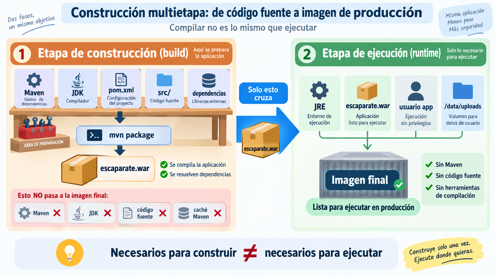

🏗️ Imágenes de contenedores¶
Descarga de diapositivas
En la sesión anterior construiste una imagen muy sencilla: elegiste una base con FROM y añadiste contenido con COPY.
Empaquetar una aplicación que antes debe compilarse introduce nuevos problemas. Ahora no basta con conseguir que la imagen funcione: también interesa que pueda reconstruirse con rapidez, que no incluya material innecesario y que ejecute la aplicación con los privilegios mínimos necesarios.
Mapa de la sesión
Dockerfile → contexto → caché → multietapa → runtime → publicación
Partirás de una imagen funcional y la irás mejorando. Cada cambio resolverá un problema distinto: qué enviamos al builder, qué podemos reutilizar, qué debe llegar a producción y con qué privilegios se ejecuta.
🧾 1. El Dockerfile describe la construcción¶
Un Dockerfile es un fichero de texto que indica cómo construir una imagen y cómo debe arrancar después el contenedor.
En esta sesión utilizarás sobre todo estas instrucciones:
| Instrucción | Función |
|---|---|
FROM |
elige una imagen de partida |
WORKDIR |
fija el directorio de trabajo |
COPY |
incorpora ficheros desde el contexto |
RUN |
ejecuta órdenes durante la construcción |
USER |
selecciona el usuario que ejecutará el proceso |
EXPOSE |
documenta el puerto esperado |
ENTRYPOINT / CMD |
indican qué se ejecuta al arrancar |
Construcción y ejecución no son lo mismo
RUN se ejecuta mientras se construye la imagen. ENTRYPOINT y CMD describen qué ocurrirá cuando se cree un contenedor a partir de ella.
Otras instrucciones, como ENV, ARG o LABEL, también son habituales, pero no necesitas dominarlas todas hoy.
Una primera versión para una aplicación Java/Maven podría ser:
| Docker | |
|---|---|
Esta imagen puede funcionar, pero mezcla dos necesidades distintas:
El objetivo de la sesión será separar ambas.
Por qué aquí aparece -DskipTests
En esta sesión aislamos el problema de construcción de la imagen. Las pruebas se incorporarán explícitamente al proceso cuando trabajes con integración continua.
📤 2. Dockerfile, contexto y .dockerignore¶
Cuando ejecutas:
| Bash | |
|---|---|
el último argumento (.) indica el contexto de construcción: los ficheros que Docker puede utilizar durante el build.
El Dockerfile puede encontrarse en otro lugar.
2.1. El Dockerfile no tiene que estar dentro del contexto¶
Por ejemplo:
Aquí:
Por tanto, una instrucción:
| Docker | |
|---|---|
buscará pom.xml dentro de escaparate/, no junto al Dockerfile.
Esto permite mantener los ficheros técnicos de despliegue en practicas/ sin alterar qué contenido puede utilizar la construcción.
2.2. .dockerignore: qué no debe entrar¶
No todo lo que existe dentro del contexto debe enviarse al builder.
Un .dockerignore colocado en la raíz del contexto puede excluir, por ejemplo:
Esto ayuda a:
- reducir el contexto;
- evitar invalidaciones de caché por ficheros irrelevantes;
- disminuir el riesgo de incorporar accidentalmente contenido local o sensible.
.gitignore y .dockerignore no son lo mismo
.gitignore decide qué queda fuera del historial Git. .dockerignore decide qué queda fuera del contexto de construcción.
🧊 3. Caché: evitar trabajo repetido¶
Docker intenta reutilizar resultados de builds anteriores. Para aprovechar esa caché, interesa separar las partes que cambian poco de las que cambian constantemente.
Un Dockerfile como este:
depende de todo el contexto. Un cambio mínimo en una clase Java puede obligar a repetir pasos costosos.
Una organización más útil es:
| Docker | |
|---|---|
La idea es:
| Text Only | |
|---|---|
Regla práctica
Coloca antes los pasos que dependen de ficheros menos volátiles y después los que dependen de contenido que cambia con frecuencia.
dependency:go-offline ayuda a anticipar muchas descargas de Maven, aunque algún plugin o dependencia adicional todavía podría resolverse durante la compilación.
3.1. Medir correctamente¶
En esta sesión compararás dos métricas distintas:
- tiempo de construcción;
- tamaño de la imagen.
En Linux puedes medir:
| Bash | |
|---|---|
y consultar después:
La columna SIZE representa el tamaño acumulado de la imagen y sus capas padre y permite comparar ambas si utilizas la misma métrica en todos los casos.
Tamaño de imagen y uso total de disco no responden a la misma pregunta
docker image ls permite comparar imágenes concretas. docker system df muestra cuánto espacio utiliza Docker en conjunto y puede verse afectado por cachés, capas compartidas y otros objetos.
Caché y tamaño final son problemas distintos
Ordenar bien las instrucciones puede acelerar reconstrucciones. Eso no elimina automáticamente Maven, el JDK o el código fuente de la imagen final.
🪆 4. Construcción multietapa: compilar no es ejecutar¶
Para construir Escaparate hacen falta Maven, el JDK, el código fuente y las dependencias necesarias para generar el artefacto.
Para ejecutarlo necesitamos mucho menos:
El WAR de Escaparate es ejecutable: al arrancarlo, Spring Boot inicia su Tomcat embebido en el puerto 8080. No hace falta instalar un Tomcat externo dentro de la imagen.

Figura 1. En una construcción multietapa, las herramientas necesarias para compilar no tienen por qué formar parte de la imagen final. Elaboración propia.
La figura resume el principio fundamental: la primera etapa dispone de todas las herramientas necesarias para fabricar la aplicación; la segunda recibe únicamente el resultado que necesita para ejecutarla.
En nuestro caso, mvn package genera escaparate.war y ese artefacto es lo único que necesitamos trasladar desde la etapa de construcción a la de ejecución.
La figura anticipa además dos decisiones que veremos en el apartado siguiente: ejecutar con un usuario sin privilegios y preparar una ruta escribible para los ficheros generados por la aplicación.
Un Dockerfile multietapa puede expresar ese proceso así:
El segundo FROM inicia una nueva etapa. La imagen final no hereda automáticamente todo lo que había en la etapa anterior: solo recibe aquello que copiamos explícitamente con COPY --from=build.
Por eso la imagen de ejecución ya no necesita contener:
- Maven;
- el JDK completo utilizado para compilar;
- el código fuente;
- la caché y otros materiales de construcción.
Dos niveles de empaquetado
Conviene distinguir:
Las dependencias necesarias no desaparecen
Las bibliotecas Java requeridas para ejecutar la aplicación siguen dentro del artefacto. Lo que dejamos atrás son herramientas y materiales de construcción que producción no necesita.
No confundas las dos optimizaciones
La construcción multietapa reduce principalmente qué termina dentro de la imagen final. La mejora del tiempo de reconstrucción procede sobre todo de la caché estudiada en el apartado anterior.
Para saber más: una etapa puede producir otros resultados
Una construcción puede incluir etapas destinadas a generar informes u otros artefactos sin incorporarlos a la imagen final.
Docker permite incluso construir una etapa concreta mediante --target. No necesitas utilizarlo en esta sesión.
🛡️ 5. Una imagen preparada para ejecutar¶
Reducir el tamaño no es la única mejora. La imagen final debe ejecutar la aplicación con los recursos y privilegios que realmente necesita.
5.1. Usuario sin privilegios¶
Si no se configura otro usuario, muchos contenedores terminan ejecutando su proceso como root.
Para una aplicación web es preferible crear un usuario específico:
Pero quitar privilegios tiene una consecuencia: la aplicación ya no podrá escribir en cualquier ruta.
Escaparate almacena ficheros durante la ejecución, así que debemos preparar explícitamente un directorio:
| Docker | |
|---|---|
Aquí cada decisión tiene una función:
| Elemento | Función |
|---|---|
/data/uploads |
ruta disponible para escritura |
chown |
entrega esa ruta al usuario de la aplicación |
APP_STORAGE_PATH |
indica a Escaparate dónde almacenar |
USER app |
evita ejecutar el proceso como root |
USER no es solo añadir una línea
Si la aplicación necesita escribir en runtime, debes preparar antes los directorios y permisos necesarios.
5.2. Runtime ajustado¶
La etapa final debe incluir únicamente lo necesario para ejecutar y diagnosticar razonablemente la aplicación.
| Base | Ventaja | Limitación |
|---|---|---|
| Imagen completa | más herramientas disponibles | más software innecesario |
Variante mínima (alpine, slim) |
menor tamaño habitual | pueden faltar herramientas o bibliotecas |
| Distroless | superficie muy reducida | diagnóstico interactivo más difícil |
En este módulo utilizaremos variantes mínimas que todavía permitan inspeccionar el contenedor cuando sea necesario.
Una imagen también envejece
Aunque tu código no cambie, la imagen base y sus paquetes pueden recibir correcciones de seguridad. Por eso una estrategia real de mantenimiento incluye reconstruir y actualizar las imágenes periódicamente.
5.3. Cada optimización resuelve un problema diferente¶
Una imagen preparada para desplegar combina varias decisiones:
| Mejora | Problema que resuelve |
|---|---|
.dockerignore |
contexto innecesario o sensible |
| ordenar capas | reconstrucciones costosas |
| multietapa | herramientas de build en producción |
| runtime mínimo | tamaño y superficie de software |
| usuario sin privilegios | permisos excesivos |
| rutas escribibles controladas | escritura segura durante la ejecución |
No todas las mejoras persiguen lo mismo. Conviene decir siempre si estamos intentando reducir tiempo, tamaño, privilegios o superficie de ataque.
🏷️ 6. Identificar y publicar la imagen¶
Una misma imagen puede tener varias referencias:
La primera puede tratarse como estable por convención para identificar el resultado de una sesión. latest, en cambio, es una etiqueta móvil que puede apuntar a otra imagen en el futuro.
Una etiqueta no es técnicamente inmutable
Aunque decidamos no reutilizar sesion-04, un registro permite reasignar una etiqueta. El digest (sha256:...) es la referencia ligada al contenido exacto.
Para publicar:
| Bash | |
|---|---|
La misma imagen puede recibir además latest sin duplicar su contenido:
| Bash | |
|---|---|
Mientras ambas referencias apunten al mismo digest, identifican el mismo contenido.
🎯 Qué debes saber hacer al salir de esta sesión¶
Al terminar deberías poder:
- distinguir el Dockerfile del contexto de construcción;
- utilizar
.dockerignorepara reducir el contexto; - ordenar instrucciones para aprovechar mejor la caché;
- diferenciar una mejora de tiempo de reconstrucción de una reducción de tamaño final;
- construir una imagen multietapa;
- explicar qué atraviesa la frontera entre etapa de build y etapa de runtime;
- ejecutar la aplicación con un usuario sin privilegios y una ruta escribible preparada;
- comparar de forma consistente tiempo y tamaño;
- publicar una imagen con una referencia estable por convención y otra móvil.
✅ Ideas clave¶
Abrir resumen
- El Dockerfile describe la construcción; el contexto determina qué ficheros pueden utilizar sus
COPY. .dockerignorereduce lo que Docker recibe durante la construcción.- La caché funciona mejor cuando colocamos primero lo que cambia menos.
- Caché y multietapa resuelven problemas distintos: una reduce trabajo repetido; la otra reduce lo que llega a producción.
- Escaparate puede compilarse con Maven + JDK y ejecutarse después únicamente con JRE + WAR.
- El segundo
FROMmarca una nueva etapa; solo pasa a ella lo que copiamos explícitamente. - Ejecutar como usuario sin privilegios requiere preparar las rutas que la aplicación necesita escribir.
- Una imagen más pequeña no es automáticamente «mejor»: cada optimización debe responder a un objetivo concreto.
latestes una etiqueta móvil; un digest identifica contenido exacto.
En la actividad partirás de una imagen funcional de Escaparate y la transformarás en una imagen más adecuada para despliegue, comparando con datos reales qué mejora cada decisión.